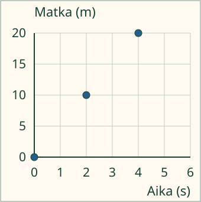
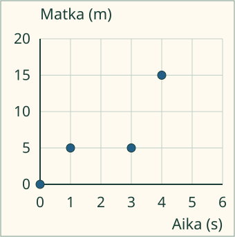

<link rel="stylesheet" href="lesson.css">


<section data-teaching-step="1" data-lesson-role="teaching-step" data-audience-spacing="compact">
<p class="lesson-intro"> Loikka haluaa nähdä taulukon mittausparit yhdellä kuvalla.</p>
<h2>Samasta rivistä yksi piste</h2>
<p><strong>Teen annetuista mittauspareista kuvaajan.</strong> Käytämme kuvitteellisen liikemallin lukuja. Tässä tehtävässä <strong>aika on vaaka-akselilla ja matka pystyakselilla</strong>. Kirjoita myös yksiköt: sekunti s ja metri m.</p>
<p>Mallin parit ovat <strong>0 s ja 0 m; 2 s ja 10 m; 4 s ja 20 m</strong>. Pari 2 s ja 10 m sijoitetaan näin: etsi vaakaluku 2, sitten pystyluku 10. Merkitse piste niiden risteykseen.</p>
<figure data-lesson-role="worked-example"></figure>
<p>Akselin luvut ratkaisevat. Yksi pystyruutuväli on tässä <strong>5 m</strong>, ei 1 m. Alun pari (0, 0) kuuluu aineistoon.</p>
</section>


<section data-teaching-step="2" data-lesson-role="teaching-step">
<h3>Rakenna oma kuvaaja</h3>
<p>Lähdetaulukko pysyy näkyvissä. Nimeä akselit ja kirjoita jokaisen pisteen kaksi lukua. Pisteet ilmestyvät kuvaan. Voit muuttaa tai poistaa niitä ennen tarkistusta.</p>
</section>


<section data-teaching-step="3" data-lesson-role="teaching-step">
<div data-plot-process id="mallin-ohjaus" data-lesson-context-source="workbench"><p>Ilman moduulia: nimeä paperille vaaka-akseli aika (s) ja pystyakseli matka (m). Merkitse annetut kolme paria ja tarkista ne lähteestä.</p></div>
</section>


<section data-teaching-step="4" data-lesson-role="teaching-step">
<h3>Sama matka kahdessa eri parissa</h3>
<figure data-lesson-role="worked-example"></figure>
<p>Uudessa aineistossa <strong>1 s ja 5 m</strong> sekä <strong>3 s ja 5 m</strong> ovat eri pareja. Molemmat merkitään. Aikaväli 1:stä 3:een on pidempi kuin 0:sta 1:een; pisteitä ei aseteta vain tasaisin välein.</p>
</section>


<section data-teaching-step="5" data-lesson-role="teaching-step">
<p data-lesson-role="question"><strong>Ennusta:</strong> muuttuuko aineisto, jos lisäät samat pisteet eri järjestyksessä?</p>
<details data-lesson-role="answer"><summary>Katso ajatus</summary><p>Ei. Samat parit ovat yhä samojen akselilukujen kohdalla. Jos vaihdat yhden parin luvut keskenään, sen merkitys yleensä muuttuu.</p></details>
<details data-lesson-role="hint"><summary>Apua ja uusi aineisto</summary><p>Lue aina yhden rivin molemmat luvut. Vaakasuunnan 2 ei tarkoita kahta ruutua, jos yksi väli onkin 2 sekuntia. Katso asteikon numerot. Tyhjä kenttä odottaa vastausta; 0 on oikea luku.</p><p>Valitse harjoituksesta uusi malliaineisto ja tarkista uudet parit lähteestä. Asteikon vaihto voi siirtää pisteitä kuvassa, vaikka niiden arvot säilyvät.</p><p>Jatka samaa kuvaajaa ja sen kirjauksia tässä. Voit valita harjoituksesta uuden malliaineiston sen omalla valikolla; se aloittaa uuden tehtävän. Pelkkä tämän näkymän avaaminen säilyttää nykyiset pisteesi ja vastauksesi.</p>
<details data-lesson-role="teaching-step" data-lesson-context="graph-own" data-context-source="workbench"><summary>Jatka omaa kuvaajaa tässä</summary><p data-context-fallback>Malli on ilman JavaScriptiä alkuperäisessä kohdassaan: <a href="#mallin-ohjaus">avaa mallin kohta</a>.</p><div data-context-slot></div><button type="button" data-context-close hidden>Sulje malli</button></details>
</details>
</section>


<section data-teaching-step="6" data-lesson-role="teaching-step">
<details data-lesson-role="teaching-step"><summary>Tutki lisää: pitäisikö pisteet yhdistää?</summary><p>Pisteet ovat annetut mittaukset. Niiden välissä ei ole tällä sivulla uusia mitattuja arvoja. Viivan lisääminen vaatisi selityksen siitä, mitä välissä oletetaan tapahtuneen. Tässä jätämme viivan pois.</p></details>
</section>


<details class="teacher" data-lesson-role="teacher-note"><summary>Opettajalle: prosessi ja rajat</summary><p>Vuosiluokat 7–9, representation/process. Vaadittu PHY79-DATA-01 säilyy. M79-FUNC-GRAPH on vahva esitystuki, ei uusi pakollinen portti. Tässä valitaan aika vaakaan ja matka pystyyn näkyvän sopimuksen mukaan; muussa kysymyksessä johdonmukainen akselien vaihto voi olla kelvollinen esitys. Ei nopeuden, kulmakertoimen tai funktion laskemisen vaatimusta.</p><p>Luvut ovat valmiiksi annettua kuvitteellista malliaineistoa, eivät oppijan havaintoja. Menettely on tarkoitus → nimet ja yksiköt → asteikko → jokainen pari pisteeksi → vertailu alkuperäiseen taulukkoon. Piirrosapu näyttää tämän menettelyn vaiheita, ei fyysistä liikettä tai mittausaikaa. Se ei täytä oppijan omia pisteitä. Lähde on aina saatavilla ilman katselu-, muisti- tai nopeusporttia.</p><p>Tarkistus hyväksyy samat parit missä tahansa järjestyksessä ja kummankin tarjotun johdonmukaisen asteikon. Sama pystyarvo eri vaaka-arvoilla on sallittu. Tässä aineistossa jokainen pari esiintyy kerran: samaa pistettä ei käytetä korvaamaan puuttuvaa paria. Harvat, ylimääräiset, toistetut tai kelvottomat vastaukset eivät täytä tehtävää. Asteikon tai piirrosavun vaihto säilyttää kelvollisen palautteen, koska vastausparit eivät muutu.</p><p>Työpohjan akselinimet valitaan annetuista vaihtoehdoista ja pisteiden koordinaatit kirjoitetaan. Tuettu kuvaajan rakentaminen ei osoita vapaata asteikon suunnittelua, fyysistä mittaamista, mittausepävarmuuden käsittelyä tai itsenäistä koko tutkimusprosessia. Standalone-harjoitus ei luo pelin prosessi-/rubriikkitukea, henkilökohtaista formaalia hallintaa, historiaa tai oppimisvaikutuksen näyttöä.</p><p>Ilman ruutua käytä opettajan kanssa annettua tai erikseen kerättyä taulukkoa ja ruutupaperia. Nimeä akselit, valitse sopiva asteikko ja vertaa jokainen piste lähderiviin. Mahdollinen fyysinen tutkimus arvioidaan erikseen. Aikuinen saa auttaa lukemisessa; puhetta, kohteiden nimeämistä tai laskutaputuksia ei vaadita.</p></details>


<section data-teaching-step="7" data-lesson-role="teaching-step">
<p data-lesson-role="question"><strong>Lopuksi:</strong> mistä taulukon rivistä valitsemasi piste tuli?</p>
</section>


